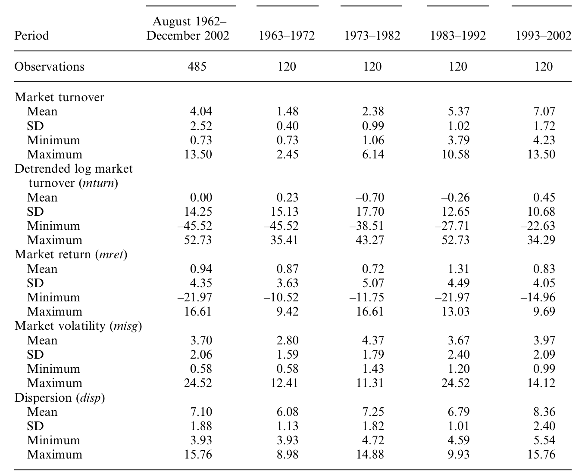
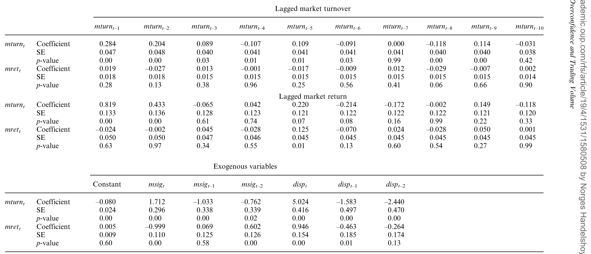
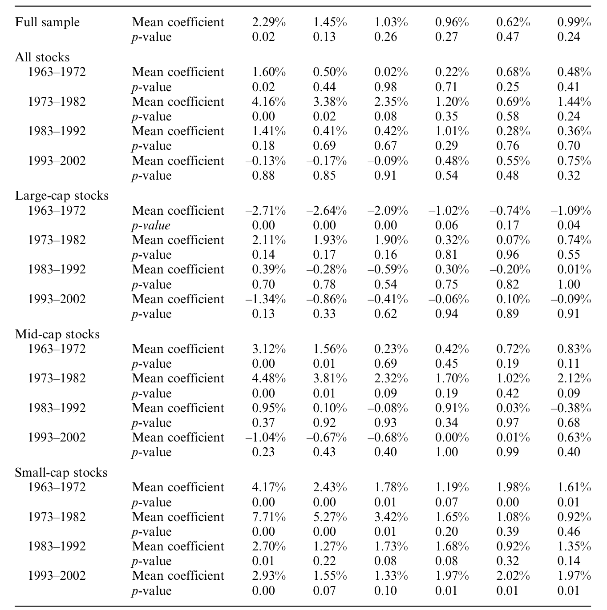
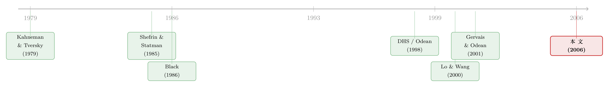

赚过钱的人，更爱交易——一条藏在成交量里的「过度自信」
本文读的是 Statman, Thorley & Vorkink (2006, Review of Financial Studies)：如果投资者高估了自己选股与择时的本事，他们就会交易过度；而由于「自我归因偏差」，这份自信会随着过去的收益涨落。作者用 1962–2002 年 NYSE/AMEX 的月度数据、配合向量自回归与脉冲响应，发现换手率会对滞后的收益正向响应、且持续好几个月——市场层面如此，个股层面也如此。更妙的是，个股换手率对市场收益冲击的反应，比对它自己收益冲击的反应还要强。
1 引言：人为什么交易得这么多？
先抛一个老问题。在一个高度竞争、信息高效的市场里，买卖双方对一笔交易的「合理价格」本该越来越趋同——那为什么人们还在没完没了地换手？
这不是抬杠。Odean (1999) 用真实账户算过一笔残酷的账：交易得最多的人，恰恰亏得最多。既然如此，理性人理应越交易越收手才对。可现实是，过去四十年美国股市的换手率不降反升：上世纪七十年代中期之前，月度换手率还在 2% 以下（把整个市场换一遍要四年多）；到八十年代末升到约 6%（换一遍要 18 个月）；到 2002 年已经接近每月 10%（换一遍只要十个月）。
成交量的这股「停不下来」的劲头，是金融经济学里一个由来已久的困惑。Black (1986) 给过一个出口：市场里有一群 噪声交易者 (noise traders)，他们让「完美理性、于是谁也不愿成交」的均衡得以打破。但噪声从哪儿来、又为什么会随时间起伏？这篇论文给出的答案只有四个字——过度自信。
这条思路的国际版，可参见本博客的《股票涨了，他们为什么更想交易？——46 国市场里的一条「追涨」暗线》；本文是它在美国长样本上的「原型」。
2 先把两种「行为」分清楚：过度自信 ≠ 处置效应
读这篇论文，最容易把两件事搅在一起：过度自信 (overconfidence) 与 处置效应 (disposition effect)。作者花了很大篇幅澄清，因为这关乎后面每一个系数该怎么解读。
处置效应由 Shefrin & Statman (1985) 提出，骨架是 Kahneman & Tversky (1979) 的 前景理论 (prospect theory) 加上「骄傲与懊悔」两种情绪：投资者愿意尽早卖掉赚钱的股票来兑现骄傲，却迟迟不肯卖掉亏钱的股票以回避懊悔。
过度自信是另一回事：投资者高估了自己私有信息的精度，于是把误差区间画得过窄，看法稍有不同就忍不住要交易。两者的分野有两条，记住它们，下文的「反转」才看得懂：
- 一边 vs 两边。 处置效应只解释一笔交易里的一侧动机（想卖掉浮盈的那个人），对手盘未必有偏差；而过度自信能解释两侧——两个都自信过头、看法又不一致的人，凑成一笔交易，不需要任何流动性交易者或理性知情者在场。
- 个股 vs 市场。 处置效应是对手里某只具体股票的态度；而本文关心的过度自信，是对市场、对「主动交易能赚钱」这件事本身的态度。Grinblatt & Han (2005) 正是用处置效应去解释 Jegadeesh & Titman (1993) 的动量异象，那是「具体股票」层面的故事。
这条区分是全文的钥匙：个股换手率对它自己滞后收益的响应，记在「处置效应」头上；对滞后市场收益的响应，记在「过度自信」头上。
3 真正可检验的那一步：自我归因偏差
光说「投资者过度自信」还不够——这只是一个静态的横截面假设。论文要检验的是它的动态版本。
接着，一个自然的问题是：自信会变吗？会，而且有规律。Daniel, Hirshleifer & Subrahmanyam (1998，下称 DHS) 与 Odean (1998a)、Gervais & Odean (2001) 共同刻画了一种 自我归因偏差 (biased self-attribution)：当市场大涨、人人账户都鼓起来时，投资者误把这份普涨的财富归功于自己的选股能力，于是变得更自信、在随后的若干期里交易得更频繁；反过来，市场下跌会削弱这份自信、压低成交（但未必对称）。
于是有了一个干净利落、可被时间序列检验的预言：
高（低）的市场收益，会带来高（低）的后续成交量。
请注意「市场」二字的分量。Gervais & Odean (2001) 的精髓在于：哪怕收益是整个市场给的、跟你的选股毫无关系，投资者仍会把它据为己功。所以滞后的市场收益——而不只是个股自己的收益——应当能预测个股的换手率。这正是本文要逮的那条「指纹」。
至于过度自信内部的版本之争（Glaser & Weber (2004) 区分了「校准失误 miscalibration」与「自以为高于平均」两派），作者坦言本文的检验分不开它们，也不打算分。
4 度量与去趋势：把一个会「漂移」的序列驯服
要把上面的预言落到数据上，第一道坎是怎么量「成交量」。
过去四十年里，一只典型股票的在外流通股数翻了近 20 倍（中位数从 180 万股涨到 3400 万股），原始成交股数因此根本没法跨期比较。沿用 Lo & Wang (2000) 的做法，本文用 换手率 (turnover) ＝ 成交股数 ÷ 在外股数 来度量交易活跃度，并按市值加权汇总成市场换手率（这在代数上恰好等于「总美元成交额 ÷ 总市值」）。市场换手率的定义是
$$T_i = \frac{V_i}{S_i}, \qquad T_M = \sum_i w_i\, T_i$$
其中 \(V_i\)、\(S_i\) 是证券 \(i\) 的成交量与在外股数，权重 \(w_i\) 按市值算。
第二道坎更隐蔽：这条序列是非平稳的。从图上看，换手率有明显的长期上行趋势，方差也随趋势放大。作者先取对数，再用 Phillips & Perron (1988) 检验——对数市场换手率的统计量是 −1.8，去趋势后是 −16.0，而 5% 临界值是 −2.9：换句话说，不去趋势就过不了单位根这一关，VAR 的标准误会有偏。
于是作者祭出 Hodrick & Prescott (1997) 滤波（下称 HP 滤波）来抽取趋势。它的目标函数是「拟合」与「平滑」之间的一场拔河：
最终用于分析的，是对数换手率与其 HP 趋势之间的月度差（记作 mturn）。
这里埋了一个作者自己也承认的代价：HP 滤波是双边的，去趋势可能把过度自信的长期效应一并抹掉——比如 1987 年崩盘后成交量长期低迷、九十年代牛市里成交量长期攀升，这些都与过度自信相符，但「太少、太慢、无法做假设检验」，只能作为轶事。所以本文的基准是去趋势序列，对长期效应的发现是偏保守的。
下表把市场层面的家底交代清楚：全样本 485 个月，市场换手率均值 4.04%、标准差 2.52；但从第一个十年（1963–72）的均值 1.48% 到最后一个十年（1993–2002）的 7.07%，几个标准差的跳升再次印证了原始序列的非平稳。月度市场收益 mret 均值 0.94%（年化约 11.28%），而去趋势对数换手率 mturn 的子期均值都贴着 0，说明它确实被驯成了平稳序列。

Table 1: presents summary statistics on monthly market-wide turnover
为排除「重新平衡」「信念分歧」这些竞争性解释，作者还准备了两个控制变量：市场波动率 misg（按 French, Schwert & Stambaugh (1987) 用日内收益算的月度已实现波动），以及横截面 离散度 (dispersion) disp。前者的定义是
$$msig_t^2 = \sum_{\tau=1}^{T} r_\tau^2 + 2\sum_{\tau=1}^{T} r_\tau\, r_{\tau-1}$$
其中 \(r_t\) 是第 \(t\) 个交易日的收益，\(T\) 是当月交易天数（后一项在修正日内自相关）。
5 识别策略：用 VAR 和脉冲响应「逼问」滞后收益
万事俱备，怎么把「滞后收益 → 当期成交量」这条因果味十足的关系问出来？
本文的做法是 向量自回归 (vector autoregression, VAR) 加 脉冲响应函数 (impulse response function, IRF)。市场层面是一个二元 VAR：把去趋势对数换手率 mturn 与市场收益 mret 放进同一个系统（外加 misg、disp 控制），让数据自己回答：给收益一个冲击，换手率在随后各月会怎么动？ 个股层面则进一步把系统扩成「个股换手率 + 个股收益 + 市场收益」，从而能把「对自己收益的响应」（处置效应）与「对市场收益的响应」（过度自信）同时估出来、还能比大小。
为什么非要 IRF？因为过度自信理论没有给出一个确切的时间窗——它只说「高收益带来后续更高的成交」，却没说是一个月还是半年。VAR/IRF 恰好能把这条「持续多久、衰减多快」的曲线整条画出来，而不必预设一个滞后阶数。
至于那两个控制变量的用意，也值得点一句：如果换手率只是 重新平衡 (rebalancing) 的产物，那么大涨和大跌之后都该放量（对收益符号不敏感）；如果只是对信息事件的「异质解读」，那应当体现为成交量与当期波动的相关，而不是与滞后收益的符号挂钩。把 misg、disp 摁住之后还剩下的、对滞后收益符号敏感的那部分响应，才是留给过度自信和处置效应的。（关于「换手率有多少其实只是再平衡」，可参见《翻看换手率：你买卖股票，多半只是在跟着大盘「再平衡」》。）
6 主要结果：成交量确实在「追涨」，而且追得很久
然后，结果出来了，干净得有点出乎意料。
第一，市场层面。 市场换手率对滞后市场收益正向、显著、且持续多月地响应——一次正的收益冲击，会在随后好几个月里持续抬高换手率。这正是 Gervais–Odean / Odean 过度自信模型的核心预言。如表 4，全样本二元 VAR 的脉冲响应清楚地刻画了这条「追涨」曲线。

Table 4: summarizes the results of the full-sample bivariate VAR of
第二，个股层面，也是最关键的一步。 在同时控制了个股滞后换手率与个股滞后收益的回归里，个股换手率对两类滞后收益都正向响应：
- 对自己的滞后收益正向响应——这与处置效应一致；
- 对市场的滞后收益正向响应——作者把它解读为投资者过度自信的变化。
但真正令人精神一振的，是一个反转：个股换手率对市场收益冲击的响应，竟然比对它自己收益冲击的响应还要强。一只股票自己涨了，持有人按处置效应想卖；可整个市场涨了——明明跟这只股票的基本面没多大关系——持有人反而更想交易它。这种「市场普涨比个股自身表现更能撩动你下单」的不对称，几乎就是过度自信（把普涨之财据为己功）写在成交量上的签名。
作者还坦诚地把丑话说在前头：他们的研究是时间序列取向的，并非干净的自然实验，别的解释未必全被排除；但「滞后收益与成交量之间这条领先—滞后关系，其量级与持续性都强到——无论你怎么解读，结果本身都值得一看」。这份分寸感，恰是这篇论文耐读的地方。
7 异质性：越是小盘、越是早年，这条「指纹」越清晰
如果这真是散户的行为偏差，那么散户占比越高的地方，效应就该越强。论文的第三个发现正中此处：返回—成交的领先—滞后关系，在小市值股票里、以及在更早的时间段里都更为显著——而这两处，恰恰是个人投资者相对机构投资者占比更大的地方。如表 5，把全样本拆成四个十年子期后，早期子期的滞后系数明显更「硬」。

Table 5: presents the subsample results for the first six lags of the
这条横截面/时序的异质性，给「过度自信」这个行为解释又添了一块旁证：它不是均匀地撒在所有股票、所有年代，而是集中在最可能由散户主导的角落。
8 文献脉络：从「噪声」到「自我归因」，再到成交量
把这条线捋一捋，会看到一个漂亮的接力。
最早是 Kahneman & Tversky (1979) 的前景理论，给「人不是理性效用最大化者」立了规矩；Shefrin & Statman (1985) 把它落到投资行为上，提出处置效应。另一边，Black (1986) 用噪声交易者撬开了「无人成交」的理性僵局，但没说噪声的来处。真正把「噪声 = 过度自信，且会自我强化」讲透的，是 Daniel, Hirshleifer & Subrahmanyam (1998) 与 Odean (1998a)，再到 Gervais & Odean (2001) 的「学着变得过度自信」。与此同时，Lo & Wang (2000) 把换手率确立为度量交易活跃度的正确刻度。本文站在这两股潮流的交汇处：用 Lo–Wang 的换手率，去检验 Odean–Gervais 的过度自信动态预言，并顺手把处置效应一并装进同一个 VAR 里区分开来。

9 评论与延伸（Q&A + 研究方向）
(a) 几个可能的疑问
Q：过度自信和处置效应到底怎么区分？凭什么把一个系数判给这个、把另一个判给那个？
靠两条边界。处置效应是对具体持仓的态度，只解释交易的一侧（卖出浮盈者）；过度自信是对市场和主动交易本身的态度，能解释交易的两侧。落到回归里：个股换手率对自己滞后收益的响应 → 处置效应；对市场滞后收益的响应 → 过度自信。这也是为什么作者要把个股 VAR 扩成「个股换手率＋个股收益＋市场收益」三元系统，好让两者同框、各归其位。
Q：用滞后市场收益解释个股换手率，会不会其实只是「再平衡」在作祟？
作者用控制变量堵这条路。纯再平衡预言「大涨和大跌后都放量」（对收益符号不敏感），而本文逮到的是对正收益的正响应；离散度
disp又专门用来吸收为维持组合权重而生的交易。摁住波动与离散度之后，剩下那条对滞后收益符号敏感的响应，才留给行为解释。
Q：HP 滤波去趋势，会不会把「过度自信」的长期效应连根拔掉？
这正是作者自己承认的软肋。HP 是双边滤波，去趋势会偏向于找不到长期效应，所以本文对长期影响的结论是保守的。那些最戏剧性的证据——1987 年崩盘后成交量长期低迷、九十年代牛市里成交量长期攀升——反而因为「太少、太慢」无法做假设检验，只能当轶事看。他们也报告了不去趋势的结果作为对照。
Q：为什么个股换手率对「市场收益」冲击的反应，比对它「自己收益」冲击的反应还强？这不反直觉吗？
恰恰是这点最像过度自信的签名。个股自己涨，触发的是处置效应（一侧的卖出冲动，量级有限）；而整个市场涨——跟这只股票基本面无关——却能让持有人误以为自己有本事，从而对一切股票都更想交易。市场冲击之所以更强，是因为它撬动的是「对主动交易的总体信心」，而非对某只股票的态度。
Q：这算因果识别吗，还是只是相关？
诚实地说，是一条强健的时间序列领先—滞后关系，不是自然实验式的因果。作者明确表示别的解释未必全被排除，但强调这条关系的「量级与持续性」强到足以独立于解读而成立。读者该把它当作与过度自信高度一致的强相关证据，而非干净的因果断言。
Q：小盘股、早年更强，到底说明了什么？
说明这更像散户的偏差，而非市场的普遍机制。小盘与早期，正是个人投资者相对机构占比更高的两个角落；效应在此更强，与「过度自信主要由散户驱动」的故事自洽。反过来也提示：随着机构化加深，这条「追涨成交」的暗线可能正在变淡。
(b) 几个可能的研究问题与提案
1. 把这套检验搬到公司债市场。 【经济故事】公司债以机构为主导，按本文逻辑，过度自信驱动的「追涨换手」应当更弱——这本身就是一个可证伪的预测；若仍存在，则说明机构也并非免疫。【可行性】中。TRACE 自 2002 年起提供成交，但债券换手率的度量更棘手（在外面额、零成交月份多），且需处理「数不清的零」式的低流动性。可与本博客在公司债流动性方向的工作衔接。
2. 外资持有人会不会「更追涨」？ 【经济故事】把 Gervais–Odean 的自我归因偏差放到跨境情境：外资在某国市场赚到普涨之财后，是否在随后数月加大对该国证券的换手？这与 46 国版的发现可以互相印证、又能引入「本地 vs 外资」的异质性。【可行性】中/高。需要各国月度换手率与按投资者国籍拆分的持仓/成交数据（部分市场可得）。
3. 过度自信驱动的成交量，与流动性供给的周期。 【经济故事】若牛市后散户的「自信性换手」放量，做市商承接这股流量时的库存与定价会怎样反应？过度自信周期是否系统性地压窄/推宽价差？【可行性】中。需把换手率分解（投资者类型）后，对接做市商库存与价差数据，识别上需小心成交量与流动性的内生联立。
4. 直接用现代持仓数据验证「早期更强 = 散户更多」。 【经济故事】本文只能用「小盘/早年」间接代理散户占比；如今 13F 与散户订单标识可把散户份额直接量出来，从而检验「散户占比越高、追涨换手越强」这条机制本身。【可行性】高。数据现成（13F、零售订单流），识别清晰，是一个低成本、高说服力的复制—延伸。
评论
我的判断是：这篇论文的贡献不在「发现了过度自信」，而在把一个原本只能靠问卷或私有账户旁证的行为假设，翻译成了一条用公开、长样本、聚合数据就能检验的时间序列预言——并且用同一个 VAR 把过度自信与处置效应干净地分了家。「市场冲击 > 个股冲击」这个不对称，是全文最漂亮、也最难用别的故事搪塞过去的一笔。
担忧也很实在：其一，这终究是相关而非因果，去趋势的处理在「驯服非平稳」与「保留长期效应」之间做了一个不得不为、却代价不小的取舍；其二，「滞后市场收益 → 个股换手」固然与过度自信一致，但与「关注度溢出」「情绪传染」等机制并非互斥，控制变量只能堵住一部分后门。
我最想看到的后续，是把投资者类型直接拆开（散户 vs 机构、本地 vs 外资），看这条「追涨成交」的曲线在谁手里更陡——这既能给过度自信的散户解释一个直接证据，也能顺势回答一个更现实的问题：在一个越来越机构化的市场里，Black 当年所说的「噪声」，究竟是在退场，还是只是换了一批人来制造。
参考文献
- Black, F. (1986). Noise. The Journal of Finance 41(3), 529–543.
- Daniel, K., Hirshleifer, D., & Subrahmanyam, A. (1998). Investor Psychology and Security Market Under- and Over-Reaction. The Journal of Finance 53(6), 1839–1885.
- French, K., Schwert, G., & Stambaugh, R. (1987). Expected Stock Returns and Volatility. Journal of Financial Economics 17(1), 5–26.
- Gervais, S., & Odean, T. (2001). Learning to be Overconfident. The Review of Financial Studies 14(1), 1–27.
- Glaser, M., & Weber, M. (2004). Overconfidence and Trading Volume. Working paper, University of Mannheim.
- Grinblatt, M., & Han, B. (2005). Prospect Theory, Mental Accounting, and Momentum. Journal of Financial Economics (forthcoming).
- Hodrick, R. J., & Prescott, E. C. (1997). Postwar U.S. Business Cycles: An Empirical Investigation. Journal of Money, Credit, and Banking 29(1), 1–16.
- Jegadeesh, N., & Titman, S. (1993). Returns to Buying Winners and Selling Losers: Implications for Stock Market Efficiency. The Journal of Finance 48(1), 65–91.
- Kahneman, D., & Tversky, A. (1979). Prospect Theory: An Analysis of Decision Under Risk. Econometrica 47(2), 263–291.
- Lo, A., & Wang, J. (2000). Trading Volume: Definitions, Data Analysis, and Implications of Portfolio Theory. The Review of Financial Studies 13(2), 257–300.
- Odean, T. (1998a). Volume, Volatility, Price, and Profit when all Traders are Above Average. Journal of Finance 53(6), 1887–1934.
- Odean, T. (1998b). Are Investors Reluctant to Realize Losses? Journal of Finance 53(5), 1775–1798.
- Odean, T. (1999). Do Investors Trade Too Much? American Economic Review 89(5), 1279–1298.
- Phillips, P. C. B., & Perron, P. (1988). Testing for a Unit Root in Time Series Regression. Biometrika 75(2), 335–346.
- Shefrin, H., & Statman, M. (1985). The Disposition to Sell Winners too Early and Ride Losers too Long: Theory and Evidence. Journal of Finance 40(3), 777–791.